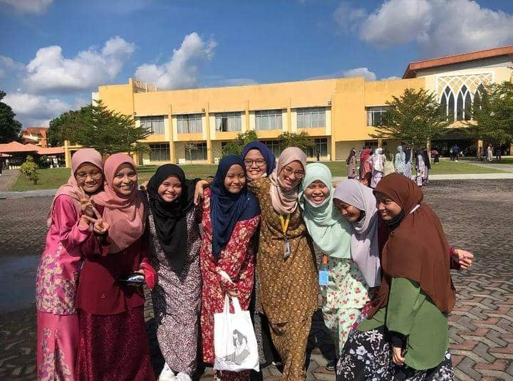

Education Background
2022-now

DEGREE
Bachelor of Information Science Records Management at UiTM Puncak Perdana, Shah Alam.
2021-2022
MATRICULATION
Before further study in Degree, I studied in Computer Science at Kolej Matrikulasi Selangor for one year. This located at Kampung Bukit Jugra,Banting.

2020-2021

SPM
I studied at Sekolah Menengah Kebangsaan Raja Muda Musa (SMKRMM) Bestari Jaya, Selangor. For your information, my SPM should be in 2020 but due to the Covid-19 pandemic. Our SPM have been postponed to 2021. I was the first batch that sit for SPM when I was 18 years old. Thanks to the Almighty Allah, I got 4A 1B for my SPM.